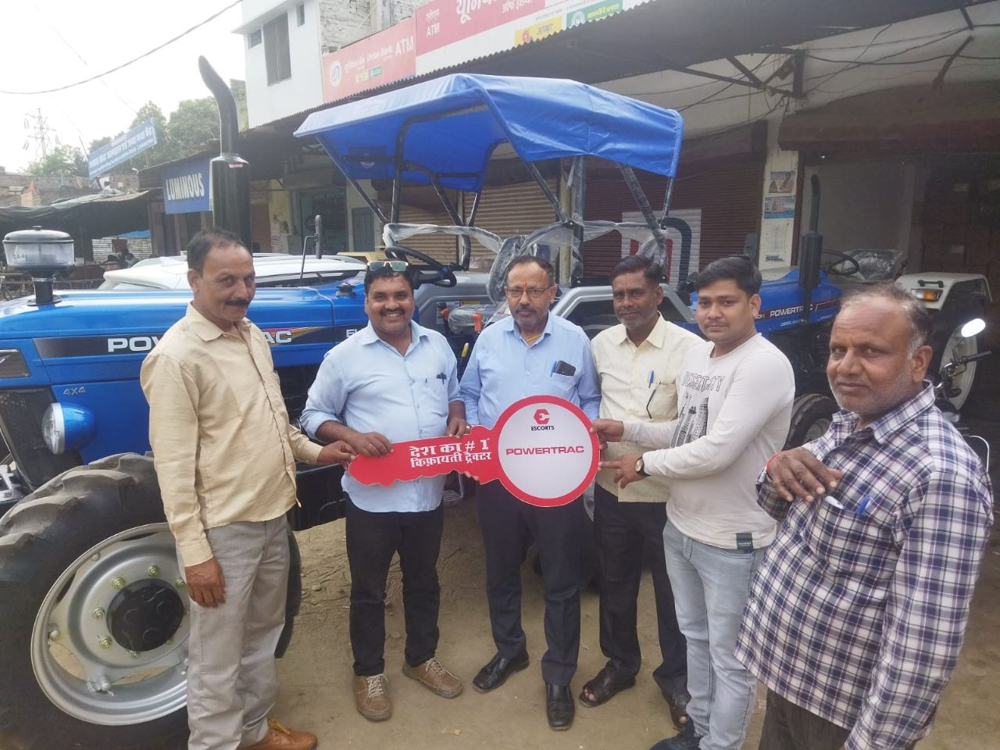

M-RITE
Project
ISRN is amplifying the government COVID-19 vaccination drive in the northeastern
states of
Meghalaya and Nagaland. We also had a Review cum Planning of the entire MRITE Project by the JSI Team in the
month
of December 2022 in Shillong. The target locations were 17 Districts - 10 districts in Nagaland and 7
districts in
Meghalaya.
The program objectives were:
- To support district health departments in strategizing, planning, and rapidly rolling out vaccination programs to achieve maximum coverage.
- To stimulate demand generation and social mobilisation for COVID-19 vaccination uptake.
- To reinforce the building capacity of health workers and community outreach workers.
- To motivate the private sector and other relevant stakeholders including media and social media influencers for the COVID-19 vaccination drive for improving accessibility and wider coverage of the COVID-19 vaccine.
- To ensure equitable distribution and focus on the last-mile reach of COVID-19 vaccination for the eligible population, including high priority groups and left out beneficiaries.
ISRN has vaccinated over 1,65,000 people till date and sensitised more than 2 lakh people across the 2 states.
